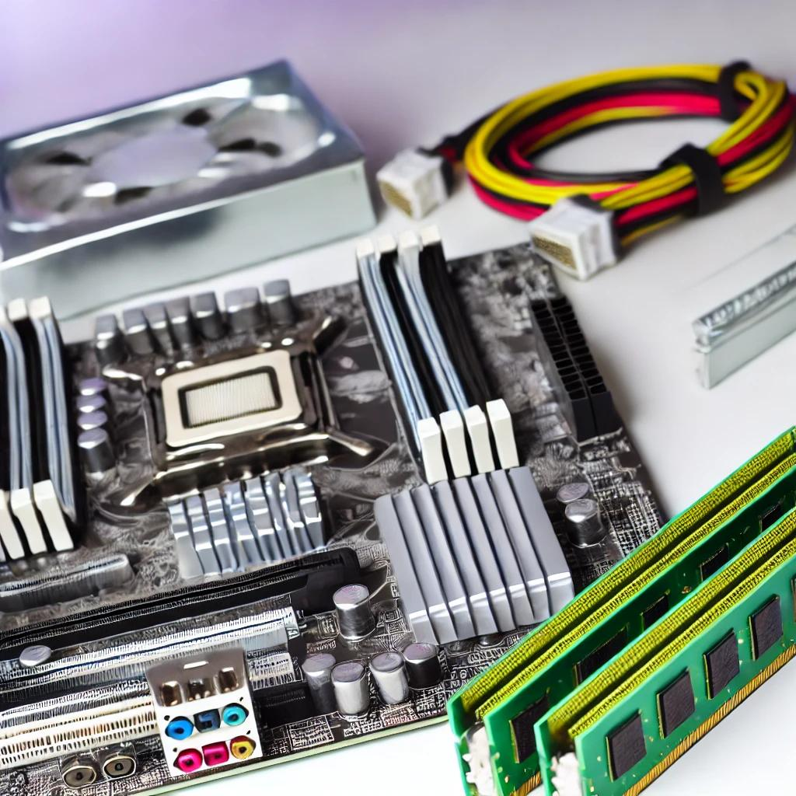

De cele mai multe ori, subiectele legate de componentele hardware reușesc să capteze atenția și curiozitatea oamenilor, indiferent dacă sunt pasionați de tehnologie sau doar utilizatori obișnuiți. Motivul este simplu: hardware-ul reprezintă baza tehnologiei moderne, iar înțelegerea acestuia ne ajută să apreciem cât de mult a avansat lumea digitală și cât de importantă este pentru viața de zi cu zi. De aceea, pe acest site ne-am propus să abordăm aceste subiecte captivante și să explorăm împreună fiecare componentă esențială, despre care se pot purta nenumărate conversații. În general, un sistem informatic funcționează datorită principalelor componente hardware, fiecare având un rol crucial. Una dintre cele mai populare și discutate componente este placa video, cunoscută și sub denumirea de GPU (Graphics Processing Unit). Aceasta este responsabilă pentru redarea grafică, fie că vorbim despre jocuri video, editare foto sau proiecte 3D complexe. Placa video a devenit un subiect de interes uriaș, mai ales în era în care grafica realistă și performanțele ridicate sunt la mare căutare. Un alt element important este stocarea. Aceasta vine în mai multe forme și tipuri, cum ar fi memoria RAM, care gestionează datele pe termen scurt și asigură viteza de lucru a sistemului, sau soluțiile de stocare permanentă, precum HDD-urile (Hard Disk Drives) și SSD-urile (Solid State Drives). Fiecare tip de stocare are propriile avantaje și dezavantaje, iar înțelegerea acestora poate face diferența atunci când îți alegi un nou sistem sau când îți dorești să îți îmbunătățești performanțele computerului. Nu putem uita să menționăm procesorul, cunoscut drept creierul unui computer. Procesorul (sau CPU - Central Processing Unit) se ocupă de execuția instrucțiunilor și de coordonarea întregului sistem. Este componenta care influențează în mod direct viteza și eficiența cu care computerul tău gestionează sarcinile, de la cele mai simple, cum ar fi navigarea pe internet, până la cele mai complexe, cum ar fi analiza de date sau randarea grafică. Pe acest site, ne-am propus să oferim o înțelegere de bază asupra acestor componente esențiale, dar într-un mod accesibil și ușor de parcurs. Vrem să explicăm tehnologia într-un limbaj clar, care să poată fi înțeles și de cei care sunt noi în domeniu. Lumea hardware-ului a transformat semnificativ viețile noastre, oferindu-ne posibilități uimitoare, de la divertisment până la productivitate. Dacă ne gândim doar puțin, ne dăm seama că trăim într-o epocă pe care un om din era interbelică nici măcar nu și-ar fi putut-o imagina: avem acces instant la informații, putem comunica cu oricine din orice colț al lumii, și putem realiza lucruri care, până acum câteva decenii, păreau pure fantezii. Așadar, te invităm să explorezi alături de noi toate aceste subiecte fascinante. Indiferent dacă vrei să înveți cum funcționează tehnologia sau doar să afli care sunt ultimele inovații din domeniu, aici vei găsi toate informațiile de care ai nevoie. Hai să pornim împreună în această călătorie prin universul hardware-ului!
